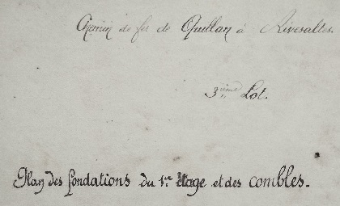

Voie ferrée Quillan / Rivesaltes
passages à niveau dans les Pyrénées orientales
Pour alléger la page sur l'historique de voie ferrée, je crée cette annexe avec les informations de Paul Dumanois sur les passages à niveau de la partie Pyrénées-Orientales de la ligne
Plan des Maisons des gardes barrières et des autres contructions sur liées
cliquer sur l'image pour une photo de meilleure définition
Plan de la maison des gardes

Maison des gardes - Plan de la porte d'entrée

Maison des gardes - Plan des fenêtres croisées
Maison des gardes - Plan des Volets et lucarnes

Maison des gardes - Plan des Portes intérieures
Maison des gardes - Plan du vitrage de l'escalier et volet de la porte d'entrée
Maison des gardes - Plan de l'escalier
Maison des gardes - Plan de l'escalier
Maison des gardes - Plan de l'escalier
Maison des gardes - Plan des placards
Maison des gardes - Plan de l'escalier du cellier

Maison des gardes - Plan des étagères
Maison des gardes - Plan des fondations du premier étage et des combles

Maison des gardes - Plan de la cheminée de l'étage
Maison des gardes - Plan de la cheminée de la cuisine et appareil des angles
Maison des gardes - Plan du fourneau
Plan du lieu d'aisance
Plan du lieu d'aisance
Plan du puits
Plan de la citerne
Maisons de garde aujourd'hui
Maison de garde 62 et son puit

Maison de garde 81, son puit et lieu d'aisance (Maury)
Maison de garde 82 (Maury - celui de l'accudent de 1932)
Commentaires
Cliquer ici pour faire un Commentaire
Retour à l'accueil historique voie ferrée